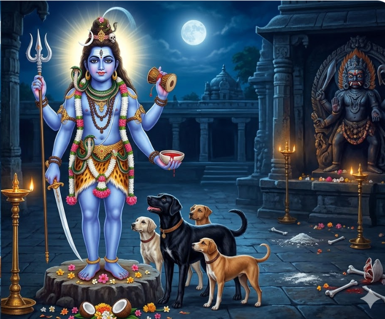

ಭಗವಾನ್ ಕಾಲಭೈರವ
ಕಾಲಭೈರವನು ಶಿವನ ಉಗ್ರ ರೂಪ. ಅವನು ಕಾಲದ ಒಡೆಯ, ಕಾಶಿ ನಗರದ ರಕ್ಷಕ, ಮತ್ತು ಅಷ್ಟ ಭೈರವರ ಮೂಲ.



ಶ್ರೀ ಕಾಲಭೈರವಾಷ್ಟಕಂ
By Sri Adi Shankaracharya
ಶ್ರೀ ಕಾಲಭೈರವ — ಕಾಶಿ ಪ್ರಭು
ದೇವರಾಜ-ಸೇವ್ಯಮಾನ-ಪಾವನಾಂಘ್ರಿ-ಪಂಕಜಂ
ವ್ಯಾಳಯಜ್ಞ-ಸೂತ್ರಮಿಂದು-ಶೇಖರಂ ಕೃಪಾಕರಮ್ ।
ನಾರದಾದಿ-ಯೋಗಿಬೃಂದ-ವಂದಿತಂ ದಿಗಂಬರಂ
ಕಾಶಿಕಾಪುರಾಧಿನಾಥ ಕಾಲಭೈರವಂ ಭಜೇ ॥ 1 ॥
ಭಾನುಕೋಟಿ-ಭಾಸ್ವರಂ ಭವಬ್ಧಿತಾರಕಂ ಪರಂ
ನೀಲಕಂಠ-ಮೀಪ್ಸಿತಾರ್ಥ-ದಾಯಕಂ ತ್ರಿಲೋಚನಮ್ ।
ಕಾಲಕಾಲ-ಮಂಬುಜಾಕ್ಷ-ಮಕ್ಷಶೂಲ-ಮಕ್ಷರಂ
ಕಾಶಿಕಾಪುರಾಧಿನಾಥ ಕಾಲಭೈರವಂ ಭಜೇ ॥ 2 ॥
ಶೂಲಟಂಕ-ಪಾಶದಂಡ-ಪಾಣಿಮಾದಿ-ಕಾರಣಂ
ಶ್ಯಾಮಕಾಯ-ಮಾದಿದೇವ-ಮಕ್ಷರಂ ನಿರಾಮಯಮ್ ।
ಭೀಮವಿಕ್ರಮಂ ಪ್ರಭುಂ ವಿಚಿತ್ರ ತಾಂಡವ ಪ್ರಿಯಂ
ಕಾಶಿಕಾಪುರಾಧಿನಾಥ ಕಾಲಭೈರವಂ ಭಜೇ ॥ 3 ॥
ಭುಕ್ತಿ-ಮುಕ್ತಿ-ದಾಯಕಂ ಪ್ರಶಸ್ತಚಾರು-ವಿಗ್ರಹಂ
ಭಕ್ತವತ್ಸಲಂ ಸ್ಥಿರಂ ಸಮಸ್ತಲೋಕ-ವಿಗ್ರಹಮ್ ।
ನಿಕ್ವಣನ್-ಮನೋಜ್ಞ-ಹೇಮ-ಕಿಂಕಿಣೀ-ಲಸತ್ಕಟಿಂ
ಕಾಶಿಕಾಪುರಾಧಿನಾಥ ಕಾಲಭೈರವಂ ಭಜೇ ॥ 4 ॥
ಧರ್ಮಸೇತು-ಪಾಲಕಂ ತ್ವಧರ್ಮಮಾರ್ಗ ನಾಶಕಂ
ಕರ್ಮಪಾಶ-ಮೋಚಕಂ ಸುಶರ್ಮ-ದಾಯಕಂ ವಿಭುಮ್ ।
ಸ್ವರ್ಣವರ್ಣ-ಕೇಶಪಾಶ-ಶೋಭಿತಾಂಗ-ಮಂಡಲಂ
ಕಾಶಿಕಾಪುರಾಧಿನಾಥ ಕಾಲಭೈರವಂ ಭಜೇ ॥ 5 ॥
ರತ್ನ-ಪಾದುಕಾ-ಪ್ರಭಾಭಿರಾಮ-ಪಾದಯುಗ್ಮಕಂ
ನಿತ್ಯ-ಮದ್ವಿತೀಯ-ಮಿಷ್ಟ-ದೈವತಂ ನಿರಂಜನಮ್ ।
ಮೃತ್ಯುದರ್ಪ-ನಾಶನಂ ಕರಾಳದಂಷ್ಟ್ರ-ಮೋಕ್ಷದಂ
ಕಾಶಿಕಾಪುರಾಧಿನಾಥ ಕಾಲಭೈರವಂ ಭಜೇ ॥ 6 ॥
ಅಟ್ಟಹಾಸ-ಭಿನ್ನ-ಪದ್ಮಜಾಂಡಕೋಶ-ಸಂತತಿಂ
ದೃಷ್ಟಿಪಾತ-ನಷ್ಟಪಾಪ-ಜಾಲಮುಗ್ರ-ಶಾಸನಮ್ ।
ಅಷ್ಟಸಿದ್ಧಿ-ದಾಯಕಂ ಕಪಾಲಮಾಲಿಕಾ-ಧರಂ
ಕಾಶಿಕಾಪುರಾಧಿನಾಥ ಕಾಲಭೈರವಂ ಭಜೇ ॥ 7 ॥
ಭೂತಸಂಘ-ನಾಯಕಂ ವಿಶಾಲಕೀರ್ತಿ-ದಾಯಕಂ
ಕಾಶಿವಾಸಿ-ಲೋಕ-ಪುಣ್ಯಪಾಪ-ಶೋಧಕಂ ವಿಭುಮ್ ।
ನೀತಿಮಾರ್ಗ-ಕೋವಿದಂ ಪುರಾತನಂ ಜಗತ್ಪತಿಂ
ಕಾಶಿಕಾಪುರಾಧಿನಾಥ ಕಾಲಭೈರವಂ ಭಜೇ ॥ 8 ॥
ಕಾಲಭೈರವಾಷ್ಟಕಂ ಪಠಂತಿ ಯೇ ಮನೋಹರಂ
ಜ್ಞಾನಮುಕ್ತಿ-ಸಾಧನಂ ವಿಚಿತ್ರ-ಪುಣ್ಯ-ವರ್ಧನಮ್ ।
ಶೋಕಮೋಹ-ಲೋಭದೈನ್ಯ-ಕೋಪತಾಪ-ನಾಶನಂ
ತೇ ಪ್ರಯಾಂತಿ ಕಾಲಭೈರವಾಂಘ್ರಿ-ಸನ್ನಿಧಿಂ ಧ್ರುವಮ್ ॥
ಶ್ರೀ ಬಟುಕ ಭೈರವ ಕವಚಂ
Vishvasaroddhara Tantra
ದೇವೇಶಿ ದೇಹರಕ್ಷಾರ್ಥಂ ಕಾರಣಂ ಕಥ್ಯತಾಂ ಧ್ರುವಮ್ ।
ಮ್ರಿಯಂತೇ ಸಾಧಕಾ ಯೇನ ವಿನಾ ಶ್ಮಶಾನಭೂಮಿಷು ॥
ರಣೇಷು ಚಾತಿಘೋರೇಷು ಮಹಾವಾಯುಜಲೇಷು ಚ ।
ಶೃಂಗಿಮಕರವಜ್ರೇಷು ಜ್ವರಾದಿವ್ಯಾಧಿವಹ್ನಿಷು ॥
ಕಥಯಾಮಿ ಶೃಣು ಪ್ರಾಜ್ಞ ಬಟೋಸ್ತು ಕವಚಂ ಶುಭಮ್ ।
ಗೋಪನೀಯಂ ಪ್ರಯತ್ನೇನ ಮಾತೃಜಾರೋಪಮಂ ಯಥಾ ॥
ತಸ್ಯ ಧ್ಯಾನಂ ತ್ರಿಧಾ ಪ್ರೋಕ್ತಂ ಸಾತ್ತ್ವಿಕಾದಿಪ್ರಭೇದತಃ ।
ಧ್ಯಾನಂ –
ವಂದೇ ಬಾಲಂ ಸ್ಫಟಿಕಸದೃಶಂ ಕುಂಡಲೋದ್ಭಾಸಿವಕ್ತ್ರಂ
ದಿವ್ಯಾಕಲ್ಪೈರ್ನವಮಣಿಮಯೈಃ ಕಿಂಕಿಣೀನೂಪುರಾದ್ಯೈಃ ।
ದೀಪ್ತಾಕಾರಂ ವಿಶದವದನಂ ಸುಪ್ರಸನ್ನಂ ತ್ರಿನೇತ್ರಂ
ಹಸ್ತಾಬ್ಜಾಭ್ಯಾಂ ಬಟುಕಮನಿಶಂ ಶೂಲಖಡ್ಗೌದಧಾನಮ್ ॥ 1 ॥
ಉದ್ಯದ್ಭಾಸ್ಕರಸನ್ನಿಭಂ ತ್ರಿನಯನಂ ರಕ್ತಾಂಗರಾಗಸ್ರಜಂ
ಸ್ಮೇರಾಸ್ಯಂ ವರದಂ ಕಪಾಲಮಭಯಂ ಶೂಲಂ ದಧಾನಂ ಕರೈಃ ।
ನೀಲಗ್ರೀವಮುದಾರಭೂಷಣಶತಂ ಶೀತಾಂಶುಚೂಡೋಜ್ಜ್ವಲಂ
ಬಂಧೂಕಾರುಣವಾಸಸಂ ಭಯಹರಂ ದೇವಂ ಸದಾ ಭಾವಯೇ ॥ 2 ॥
ಕವಚಂ –
ಓಂ ಶಿರೋ ಮೇ ಭೈರವಃ ಪಾತು ಲಲಾಟಂ ಭೀಷಣಸ್ತಥಾ ।
ನೇತ್ರೇ ಚ ಭೂತಹನನಃ ಸಾರಮೇಯಾನುಗೋ ಭ್ರುವೌ ॥ 1
ಭೂತನಾಥಶ್ಚ ಮೇ ಕರ್ಣೌ ಕಪೋಲೌ ಪ್ರೇತವಾಹನಃ ।
ನಾಸಾಪುಟೌ ತಥೋಷ್ಠೌ ಚ ಭಸ್ಮಾಂಗಃ ಸರ್ವಭೂಷಣಃ ॥ 2
ಭೀಷಣಾಸ್ಯೋ ಮಮಾಸ್ಯಂ ಚ ಶಕ್ತಿಹಸ್ತೋ ಗಲಂ ಮಮ ।
ಸ್ಕಂಧೌ ದೈತ್ಯರಿಪುಃ ಪಾತು ಬಾಹೂ ಅತುಲವಿಕ್ರಮಃ ॥ 3
ಪಾಣೀ ಕಪಾಲೀ ಮೇ ಪಾತು ಮುಂಡಮಾಲಾಧರೋ ಹೃದಮ್ ।
ವಕ್ಷಃಸ್ಥಲಂ ತಥಾ ಶಾಂತಃ ಕಾಮಚಾರೀ ಸ್ತನಂ ಮಮ ॥ 4
ಉದರಂ ಚ ಸ ಮೇ ತುಷ್ಟಃ ಕ್ಷೇತ್ರೇಶಃ ಪಾರ್ಶ್ವತಸ್ತಥಾ ।
ಕ್ಷೇತ್ರಪಾಲಃ ಪೃಷ್ಠದೇಶಂ ಕ್ಷೇತ್ರಾಖ್ಯೋ ನಾಭಿತಸ್ತಥಾ ॥ 5
ಕಟಿಂ ಪಾಪೌಘನಾಶಶ್ಚ ಬಟುಕೋ ಲಿಂಗದೇಶಕಮ್ ।
ಗುದಂ ರಕ್ಷಾಕರಃ ಪಾತು ಊರೂ ರಕ್ಷಾಕರಃ ಸದಾ ॥ 6
ಜಾನೂ ಚ ಘುರ್ಘುರಾರಾವೋ ಜಂಘೇ ರಕ್ಷತು ರಕ್ತಪಃ ।
ಗುಲ್ಫೌ ಚ ಪಾದುಕಾಸಿದ್ಧಃ ಪಾದಪೃಷ್ಠಂ ಸುರೇಶ್ವರಃ ॥ 7
ಆಪಾದಮಸ್ತಕಂ ಚೈವ ಆಪದುದ್ಧಾರಣಸ್ತಥಾ ।
ಸಹಸ್ರಾರೇ ಮಹಾಪದ್ಮೇ ಕರ್ಪೂರಧವಲೋ ಗುರುಃ ॥ 8
ಪಾತು ಮಾಂ ವಟುಕೋ ದೇವೋ ಭೈರವಃ ಸರ್ವಕರ್ಮಸು ।
ಪೂರ್ವ ಸ್ಯಾಮಸಿತಾಂಗೋ ಮೇ ದಿಶಿ ರಕ್ಷತು ಸರ್ವದಾ ॥ 9
ಆಗ್ನೇಯ್ಯಾಂ ಚ ರುರುಃ ಪಾತು ದಕ್ಷಿಣೇ ಚಂಡಭೈರವಃ ।
ನೈರೃತ್ಯಾಂ ಕ್ರೋಧನಃ ಪಾತು ಮಾಮುನ್ಮತ್ತಸ್ತು ಪಶ್ಚಿಮೇ ॥ 10
ವಾಯವ್ಯಾಂ ಮೇ ಕಪಾಲೀ ಚ ನಿತ್ಯಂ ಪಾಯಾತ್ ಸುರೇಶ್ವರಃ ।
ಭೀಷಣೋ ಭೈರವಃ ಪಾತೂತ್ತರಸ್ಯಾಂ ದಿಶಿ ಸರ್ವದಾ ॥ 11
ಸಂಹಾರಭೈರವಃ ಪಾತು ದಿಶ್ಯೈಶಾನ್ಯಾಂ ಮಹೇಶ್ವರಃ ।
ಊರ್ಧ್ವೇ ಪಾತು ವಿಧಾತಾ ವೈ ಪಾತಾಲೇ ನಂದಿಕೋ ವಿಭುಃ ॥ 12
ಸದ್ಯೋಜಾತಸ್ತು ಮಾಂ ಪಾಯಾತ್ ಸರ್ವತೋ ದೇವಸೇವಿತಃ ।
ವಾಮದೇವೋಽವತು ಪ್ರೀತೋ ರಣೇ ಘೋರೇ ತಥಾವತು ॥ 13
ಜಲೇ ತತ್ಪುರುಷಃ ಪಾತು ಸ್ಥಲೇ ಪಾತು ಗುರುಃ ಸದಾ ।
ಡಾಕಿನೀಪುತ್ರಕಃ ಪಾತು ದಾರಾಂಸ್ತು ಲಾಕಿನೀಸುತಃ ॥ 14
ಪಾತು ಸಾಕಲಕೋ ಭ್ರಾತೄನ್ ಶ್ರಿಯಂ ಮೇ ಸತತಂ ಗಿರಃ ।
ಲಾಕಿನೀಪುತ್ರಕಃ ಪಾತು ಪಶೂನಶ್ವಾನಜಾಂಸ್ತಥಾ ॥ 15
ಮಹಾಕಾಲೋಽವತು ಚ್ಛತ್ರಂ ಸೈನ್ಯಂ ವೈ ಕಾಲಭೈರವಃ ।
ರಾಜ್ಯಂ ರಾಜ್ಯಶ್ರಿಯಂ ಪಾಯಾತ್ ಭೈರವೋ ಭೀತಿಹಾರಕಃ ॥ 16
ರಕ್ಷಾಹೀನಂತು ಯತ್ ಸ್ಥಾನಂ ವರ್ಜಿತಂ ಕವಚೇನ ಚ ।
ತತ್ ಸರ್ವಂ ರಕ್ಷ ಮೇ ದೇವ ತ್ವಂ ಯತಃ ಸರ್ವರಕ್ಷಕಃ ॥ 17
ಏತತ್ ಕವಚಮೀಶಾನ ತವ ಸ್ನೇಹಾತ್ ಪ್ರಕಾಶಿತಮ್ ।
ನಾಖ್ಯೇಯಂ ನರಲೋಕೇಷು ಸಾರಭೂತಂ ಚ ಸುಶ್ರಿಯಮ್ ॥ 18
ಯಸ್ಮೈ ಕಸ್ಮೈ ನ ದಾತವ್ಯಂ ಕವಚೇಶಂ ಸುದುರ್ಲಭಮ್ ।
ನ ದೇಯಂ ಪರಶಿಷ್ಯೇಭ್ಯಃ ಕೃಪಣೇಭ್ಯಶ್ಚ ಶಂಕರ ॥ 19
ಯೋ ದದಾತಿ ನಿಷಿದ್ಧೇಭ್ಯಃ ಸ ವೈ ಭ್ರಷ್ಟೋ ಭವೇದ್ಧ್ರುವಮ್ ।
ಅನೇನ ಕವಚೇಶೇನ ರಕ್ಷಾಂ ಕೃತ್ವಾ ದ್ವಿಜೋತ್ತಮಃ ॥ 20
ವಿಚರನ್ ಯತ್ರ ಕುತ್ರಾಪಿ ವಿಘ್ನೌಘೈಃ ಪ್ರಾಪ್ಯತೇ ನ ಸಃ ।
ಮಂತ್ರೇಣ ಮ್ರಿಯತೇ ಯೋಗೀ ಕವಚಂ ಯನ್ನ ರಕ್ಷಿತಃ ॥ 21
ತಸ್ಮಾತ್ ಸರ್ವಪ್ರಯತ್ನೇನ ದುರ್ಲಭಂ ಪಾಪಚೇತಸಾಮ್ ।
ಭೂರ್ಜೇ ರಂಭಾತ್ವಚೇ ವಾಪಿ ಲಿಖಿತ್ವಾ ವಿಧಿವತ್ ಪ್ರಭೋ ॥ 22
ಧಾರಯೇತ್ ಪಾಠಯೇದ್ವಾಪಿ ಸಂಪಠೇದ್ವಾಪಿ ನಿತ್ಯಶಃ ।
ಸಂಪ್ರಾಪ್ನೋತಿ ಪ್ರಭಾವಂ ವೈ ಕವಚಸ್ಯಾಸ್ಯ ವರ್ಣಿತಮ್ ॥ 23
ನಮೋ ಭೈರವದೇವಾಯ ಸಾರಭೂತಾಯ ವೈ ನಮಃ ।
ನಮಸ್ತ್ರೈಲೋಕ್ಯನಾಥಾಯ ನಾಥನಾಥಾಯ ವೈ ನಮಃ ॥ 24
ಶ್ರೀ ಬಟುಕ ಭೈರವ
ಶ್ರೀ ಮಹಾ ಕಾಲಭೈರವ ಕವಚಂ
Rudrayamala Mahatantra
ಶ್ರೀ ಮಹಾ ಕಾಲಭೈರವ
ದೇವದೇವ ಮಹಾಬಾಹೋ ಭಕ್ತಾನಾಂ ಸುಖವರ್ಧನ ।
ಕೇನ ಸಿದ್ಧಿಂ ದದಾತ್ಯಾಶು ಕಾಲೀ ತ್ರೈಲೋಕ್ಯಮೋಹನ ॥ 1॥
ತನ್ಮೇ ವದ ದಯಾಽಽಧಾರ ಸಾಧಕಾಭೀಷ್ಟಸಿದ್ಧಯೇ ।
ಕೃಪಾಂ ಕುರು ಜಗನ್ನಾಥ ವದ ವೇದವಿದಾಂ ವರ ॥ 2॥
ಗೋಪನೀಯಂ ಪ್ರಯತ್ನೇನ ತತ್ತ್ವಾತ್ ತತ್ತ್ವಂ ಪರಾತ್ಪರಮ್ ।
ಏಷ ಸಿದ್ಧಿಕರಃ ಸಮ್ಯಕ್ ಕಿಮಥೋ ಕಥಯಾಮ್ಯಹಮ್ ॥ 3॥
ಮಹಾಕಾಲಮಹಂ ವಂದೇ ಸರ್ವಸಿದ್ಧಿಪ್ರದಾಯಕಮ್ ।
ದೇವದಾನವಗಂಧರ್ವಕಿನ್ನರಪರಿಸೇವಿತಮ್ ॥ 4॥
ಕವಚಂ ತತ್ತ್ವದೇವಸ್ಯ ಪಠನಾದ್ ಘೋರದರ್ಶನೇ ।
ಸತ್ಯಂ ಭವತಿ ಸಾನ್ನಿಧ್ಯಂ ಕವಚಸ್ತವನಾಂತರಾತ್ ॥ 5॥
ಸಿದ್ಧಿಂ ದದಾತಿ ಸಾ ತುಷ್ಟಾ ಕೃತ್ವಾ ಕವಚಮುತ್ತಮಮ್ ।
ಸಾಮ್ರಾಜ್ಯತ್ವಂ ಪ್ರಿಯಂ ದತ್ವಾ ಪುತ್ರವತ್ ಪರಿಪಾಲಯೇತ್ ॥ 6॥
ಕವಚಸ್ಯ ಋಷಿರ್ದೇವೀ ಕಾಲಿಕಾ ದಕ್ಷಿಣಾ ತಥಾ ।
ವಿರಾಟ್ಛಂದಃ ಸುವಿಜ್ಞೇಯಂ ಮಹಾಕಾಲಸ್ತು ದೇವತಾ ।
ಕಾಲಿಕಾ ಸಾಧನೇ ಚೈವ ವಿನಿಯೋಗಃ ಪ್ರಕೀರ್ತ್ತಿತಃ ॥ 7॥
ಓಂ ಶ್ಮಶಾನಸ್ಥೋ ಮಹಾರುದ್ರೋ ಮಹಾಕಾಲೋ ದಿಗಂಬರಃ ।
ಕಪಾಲಕರ್ತೃಕಾ ವಾಮೇ ಶೂಲಂ ಖಟ್ವಾಂಗಂ ದಕ್ಷಿಣೇ ॥ 8॥
ಭುಜಂಗಭೂಷಿತೇ ದೇವಿ ಭಸ್ಮಾಸ್ಥಿಮಣಿಮಂಡಿತಃ ।
ಜ್ವಲತ್ಪಾವಕಮಧ್ಯಸ್ಥೋ ಭಸ್ಮಶಯ್ಯಾವ್ಯವಸ್ಥಿತಃ ॥ 9॥
ವಿಪರೀತರತಾಂ ತತ್ರ ಕಾಲಿಕಾಂ ಹೃದಯೋಪರಿ ।
ಪೇಯಂ ಖಾದ್ಯಂ ಚ ಚೋಷ್ಯಂ ಚ ತೌ ಕೃತ್ವಾ ತು ಪರಸ್ಪರಮ್ ।
ಏವಂ ಭಕ್ತ್ಯಾ ಯಜೇದ್ ದೇವಂ ಸರ್ವಸಿದ್ಧಿಃ ಪ್ರಜಾಯತೇ ॥ 10॥
ಪ್ರಣವಂ ಪೂರ್ವಮುಚ್ಚಾರ್ಯ ಮಹಾಕಾಲಾಯ ತತ್ಪದಮ್ ।
ನಮಃ ಪಾತು ಮಹಾಮಂತ್ರಃ ಸರ್ವಶಾಸ್ತ್ರಾರ್ಥಪಾರಗಃ ॥ 11॥
ಅಷ್ಟಕ್ಷರೋ ಮಹಾ ಮಂತ್ರಃ ಸರ್ವಾಶಾಪರಿಪೂರಕಃ ।
ಸರ್ವಪಾಪಕ್ಷಯಂ ಯಾತಿ ಗ್ರಹಣೇ ಭಕ್ತವತ್ಸಲೇ ॥ 12॥
ಕೂರ್ಚದ್ವಂದ್ವಂ ಮಹಾಕಾಲ ಪ್ರಸೀದೇತಿ ಪದದ್ವಯಮ್ ।
ಲಜ್ಜಾಯುಗ್ಮಂ ವಹ್ನಿಜಾಯಾ ಸ ತು ರಾಜೇಶ್ವರೋ ಮಹಾನ್ ॥ 13॥
ಮಂತ್ರಗ್ರಹಣಮಾತ್ರೇಣ ಭವೇತ ಸತ್ಯಂ ಮಹಾಕವಿಃ ।
ಗದ್ಯಪದ್ಯಮಯೀ ವಾಣೀ ಗಂಗಾನಿರ್ಝರಿತಾ ತಥಾ ॥ 14॥
ತಸ್ಯ ನಾಮ ತು ದೇವೇಶಿ ದೇವಾ ಗಾಯಂತಿ ಭಾವುಕಾಃ ।
ಶಕ್ತಿಬೀಜದ್ವಯಂ ದತ್ವಾ ಕೂರ್ಚಂ ಸ್ಯಾತ್ ತದನಂತರಮ್ ॥ 15॥
ಮಹಾಕಾಲಪದಂ ದತ್ವಾ ಮಾಯಾಬೀಜಯುಗಂ ತಥಾ ।
ಕೂರ್ಚಮೇಕಂ ಸಮುದ್ಧೃತ್ಯ ಮಹಾಮಂತ್ರೋ ದಶಾಕ್ಷರಃ ॥ 16॥
ರಾಜಸ್ಥಾನೇ ದುರ್ಗಮೇ ಚ ಪಾತು ಮಾಂ ಸರ್ವತೋ ಮುದಾ ।
ವೇದಾದಿಬೀಜಮಾದಾಯ ಭಗಮಾನ್ ತದನಂತರಮ್ ॥ 17॥
ಮಹಾಕಾಲಾಯ ಸಂಪ್ರೋಚ್ಯ ಕೂರ್ಚಂ ದತ್ವಾ ಚ ಠದ್ವಯಮ್ ।
ಹ್ರೀಂಕಾರಪೂರ್ವಮುದ್ಧೃತ್ಯ ವೇದಾದಿಸ್ತದನಂತರಮ್ ॥ 18॥
ಮಹಾಕಾಲಸ್ಯಾಂತಭಾಗೇ ಸ್ವಾಹಾಂತಮನುಮುತ್ತಮಮ್ ।
ಧನಂ ಪುತ್ರಂ ಸದಾ ಪಾತು ಬಂಧುದಾರಾನಿಕೇತನಮ್ ॥ 19॥
ಪಿಂಗಲಾಕ್ಷೋ ಮಂಜುಯುದ್ಧೇ ಯುದ್ಧೇ ನಿತ್ಯಂ ಜಯಪ್ರದಃ ।
ಸಂಭಾವ್ಯಃ ಸರ್ವದುಷ್ಟಘ್ನಃ ಪಾತು ಸ್ವಸ್ಥಾನವಲ್ಲಭಃ ॥ 20॥
ಇತಿ ತೇ ಕಥಿತಂ ತುಭ್ಯಂ ದೇವಾನಾಮಪಿ ದುರ್ಲಭಮ್ ।
ಅನೇನ ಪಠನಾದ್ ದೇವಿ ವಿಘ್ನನಾಶೋ ಯಥಾ ಭವೇತ್ ॥ 21॥
ಸಂಪೂಜಕಃ ಶುಚಿಸ್ನಾತಃ ಭಕ್ತಿಯುಕ್ತಃ ಸಮಾಹಿತಃ ।
ಸರ್ವವ್ಯಾಧಿವಿನಿರ್ಮುಕ್ತಃ ವೈರಿಮಧ್ಯೇ ವಿಶೇಷತಃ ॥ 22॥
ಕಾಲೀಪಾರ್ಶ್ವಸ್ಥಿತೋ ದೇವಃ ಸರ್ವದಾ ಪಾತು ಮೇ ಮುಖೇ ॥ 23॥
॥ ಫಲ ಶ್ರುತಿ ॥
ಪಠನಾತ್ ಕಾಲಿಕಾದೇವೀ ಪಠೇತ್ ಕವಚಮುತ್ತಮಮ್ ।
ಶ್ರುಣುಯಾದ್ ವಾ ಪ್ರಯತ್ನೇನ ಸದಾಽಽನಂದಮಯೋ ಭವೇತ್ ॥ 1॥
ಶ್ರದ್ಧಯಾಽಶ್ರದ್ಧಯಾ ವಾಪಿ ಪಠನಾತ್ ಕವಚಸ್ಯ ಯತ್ ।
ಸರ್ವಸಿದ್ಧಿಮವಾಪ್ನೋತಿ ಯದ್ಯನ್ಮನಸಿ ವರ್ತತೇ ॥ 2॥
ಬಿಲ್ವಮೂಲೇ ಪಠೇದ್ ಯಸ್ತು ತ್ರಿಸಂಧ್ಯಂ ಪಠನಾದ್ ದೇವಿ ।
ಭವೇನ್ನಿತ್ಯಂ ಮಹಾಕವಿಃ ॥ 3॥
ದುರ್ಭಿಕ್ಷೇ ರಾಜಪೀಡಾಯಾಂ ಗ್ರಾಮೇ ವಾ ವೈರಿಮಧ್ಯಕೇ ।
ಯತ್ರ ಯತ್ರ ಭಯಂ ಪ್ರಾಪ್ತಃ ಸರ್ವತ್ರ ಪ್ರಪಠೇನ್ನರಃ ॥ 5॥
ಇದಂ ಕವಚಮಜ್ಞಾತ್ವಾ ಕಾಲಂ ಯೋ ಭಜತೇ ನರಃ ।
ನೈವ ಸಿದ್ಧಿರ್ಭವೇತ್ ತಸ್ಯ ವಿಘ್ನಸ್ತಸ್ಯ ಪದೇ ಪದೇ ।
ಆದೌ ವರ್ಮ ಪಠಿತ್ವಾ ತು ತಸ್ಯ ಸಿದ್ಧಿರ್ಭವಿಷ್ಯತಿ ॥ 8॥
ಅಷ್ಟೋತ್ತರ ಶತನಾಮಾವಳಿ
108 Sacred Names
ಅಷ್ಟ ಭೈರವ ವಂಶ ವೃಕ್ಷ
Kalabhairava → 8 Bhairavas → 64 Sub-Bhairavas
ಕಾಲಭೈರವನಿಂದ ಅಷ್ಟ ಭೈರವರು ಉದ್ಭವಿಸಿದರು. ಪ್ರತಿ ಭೈರವನಿಗೆ 8 ಉಪ ಭೈರವರು — ಒಟ್ಟು 64 ಭೈರವರು.
ಶ್ರೀ ಕಾಲಭೈರವ
ASHTA BHAIRAVAS